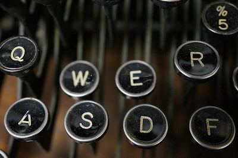

Activities
“City” Section Writer Boston University’s “The Buzz” Editorial Lifestyle Magazine - Boston, MA
Sep. 2020 - May 2021
- Created digital and print content by writing 1 article per month of the academic year, in addition to 2 stories for the bi-yearly print edition, which connected readers to a city they could not explore during pandemic restrictions
- Conducted research for each article by reaching out to local business owners and performing individual fieldwork so output remained informed, trustworthy, and respectable
- Aided in the coordination of the editorial calendar by writing article pitches and drafts to uphold magazine-wide uniform and cohesion
